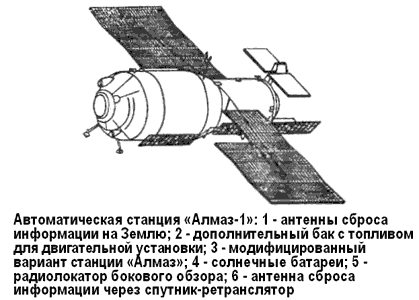
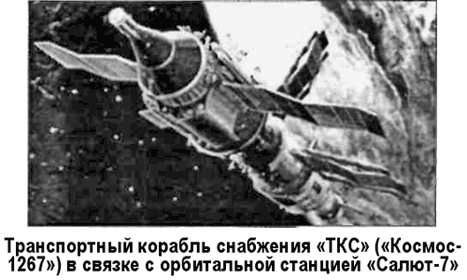
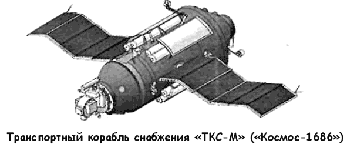

Полеты «Алмазов» и «ТКС»
Работы над проектами «Алмаза» и «ТКС» продолжались и после того, как первый «Салют» вышел на орбиту.
Так, в ЦКБМ была создана станция № 0104. На ее борт экипаж должен был доставляться не кораблем «7К-Т», а штатным «ТКС». Кроме того, на 0104-й решили испытать другой состав аппаратуры наблюдения за наземными объектами, а также радиолокационную станцию «Меч-А» с изготовленной к тому времени большой радиолокационной антенной, раскрывающейся в полете.
Изменилась и система вооружения. Теперь для обороны вместо пушки (система «Щит-1») на станцию устанавливались два снаряда «космос-космос» (система «Щит-2») конструкции того же Нудельмана.
По согласованному с заводом графику все доработки предполагалось закончить в ноябре 1978 года. Но опять работы задержались из-за того, что не был доведен «ТКС». Тогда было решено перепроектировать станцию под стыковку с «Союзами». С этой задачей конструкторы ЦКБМ справились.
Опираясь на имевшийся люк в переднем днище станции и ферменную конструкцию, крепящуюся к переднему шпангоуту гермоотсека, решили срочно изготовить автономный отсек стыковки, закрепить его на ферму и соединить герметичным сильфоном с основным объемом станции, а на переднее днище автономного отсека установить пассивный узел корабля «7К-Т» — агрегат «Г-3000».
Уже на начальном этапе работ на станциях первого поколения стадо ясно, что их возможности ограничены запасами расходуемых компонентов. Одновременно в двух ОКБ, возглавляемых Мишиным и Челомеем, появилась идея создания станции с двумя стыковочными узлами и возможностью дозаправки двигательной установки топливом в полете. Наиболее важной отличительной чертой этого проекта было то, что экипаж из четырех или пяти человек должен был выводиться совместно с «Алмазом» в возвращаемом аппарате больших размеров, установленном в передней части станции.
Дальнейшая работа станции должна была обеспечиваться запусками «ТКС», которые могли причаливать к двум стыковочным агрегатам станции. Для запуска такой станции предполагалось разработать специальную ракету-носитель грузоподъемностью свыше 35 тонн.
Однако средств для финансирования проекта нового носителя и станции не нашлось. Постановлением правительства от 28 июня 1978 года работы по пилотируемой космонавтике в бюро Владимира Челомея были прекращены.
Тогда конструкторы ЦКБМ стали разрабатывать беспилотную версию военно-космической станции «Алмаз». За счет отказа от систем, связанных с пребыванием на станции космонавтов, на «Алмазе» удалось разместить большой комплекс аппаратуры для дистанционного исследования Земли, в том числе уникальный радиолокатор бокового обзора с высоким разрешением.
Подготовленная к старту в 1981 году автоматическая станция «Алмаз» пролежала в одном из цехов монтажно-испытательного корпуса космодрома Байконур до 1985 года.

После многолетних задержек, не связанных с работами по станции, была предпринята попытка запуска этой станции, оказавшаяся неудачной из-за отказа системы управления ракетыносителя «Протон-К». 18 июля 1987 года состоялся удачный запуск автоматического варианта станции «Алмаз» под обозначением «Космос1870». С нее были получены высококачественные радиолокационные изображения земной поверхности.
И, наконец, 31 марта 1991 года модифицированный автоматический вариант орбитальной станции разработки ЦКБМ со значительно улучшенными характеристиками бортовой аппаратуры был выведен на орбиту под своим настоящим именем «Алмаз-1».
Параллельно шли работы над «альтернативным» кораблем снабжения «ТКС». Первый «ТКС» (№ 16101) планировалось использовать как комплексный стенд для наземной отработки корабля. Однако для ускорения начала летно-конструкторских испытаний под этот стенд пошел второй корабль (№ 16201). Первый же был выведен на орбиту 17 июля 1977 года под названием «Космос-929». Через месяц от него отделился и совершил посадку возвращаемый аппарат; автономный полет грузового блока продолжался до 3 февраля 1978 года, К началу 1981 года был подготовлен запуск следующего «ТКС» (№ 16301); еще два корабля (№ 16401 и 16501) находились на заводе в стадии изготовления. Проектными службами КБ «Салют» было предложено продолжить испытания «ТКС» в рамках программы «ДОС».
«ТКС» № 16301 под названием «Космос-1267» был запущен 25 апреля 1981 года. 24 мая от корабля отделился возвращаемый аппарат. 19 июня оставшийся на орбите блок причалил к станции «Салют-6». Из-за того, что стыковочный узел станции не был рассчитан на прием «ТКС», аппараты были только стянуты (механические замки не закрывались).
Совместный полет «ТКС» и «Салюта-6» продолжался более года. Экипажи за это время на станцию не прилетали. 29 июля 1982 года связка «Салют-6» — «Космос-1267» была сведена с орбиты.
ТКС № 16401 совершил полет к станции «Салют-7», на которой были приняты специальные меры по совместимости стыковочных узлов, вследствие чего на его борту смогли поработать космонавты. Корабль стартовал под именем «Космос-1443» 2 марта 1983 года и состыковался с орбитальной станцией 10 марта, доставив туда различные грузы. 14 августа «ТКС» отчалил от «Салюта-7», а 23 августа от него отделился возвращаемый аппарат, успешно севший на Землю. Корабль «ТКС» впервые выполнил возложенные на него грузовые функции.


В 1982 году было принято решение установить на последний модернизированный корабль «ТКС-М», летящий к «Салюту-7», комплекс «Пион-К». Этот комплекс массой около 1400 килограммов создавался под руководством главного конструктора Германа Рудольфовича Пекки в ЦКБ «Фотон» (Казань). «Пион-К» предназначался в первую очередь для наблюдения за морскими военными базами и кораблями, а также за различными наземными объектами потенциального противника. Корабль «ТКС-М» стартовал 27 сентября 1985 года, получив обозначение «Космос-1686». С комплексом «Пион-К» на «Салюте-7» поработать не удалось. Космонавты перенесли его на «Мир», там починили и только после этого выполнили всю программу испытаний. 7 февраля 1991 года связка «Салют-7» — «Космос-1686» неконтролируемо сошла с орбиты и прекратила существование в плотных слоях атмосферы. Несгоревшие обломки упали в малонаселенных районах на границе Чили и Аргентины, не причинив особого вреда.